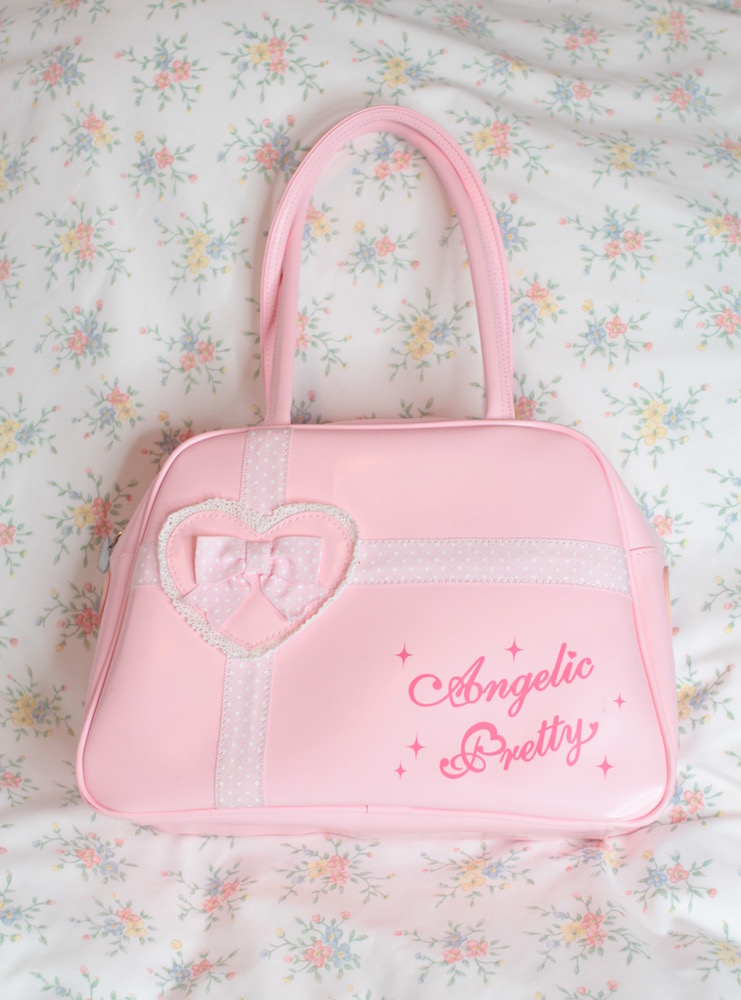
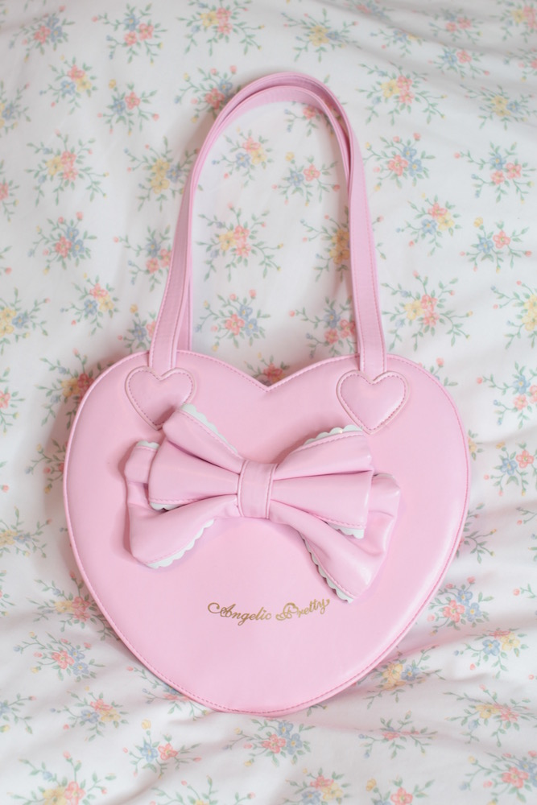
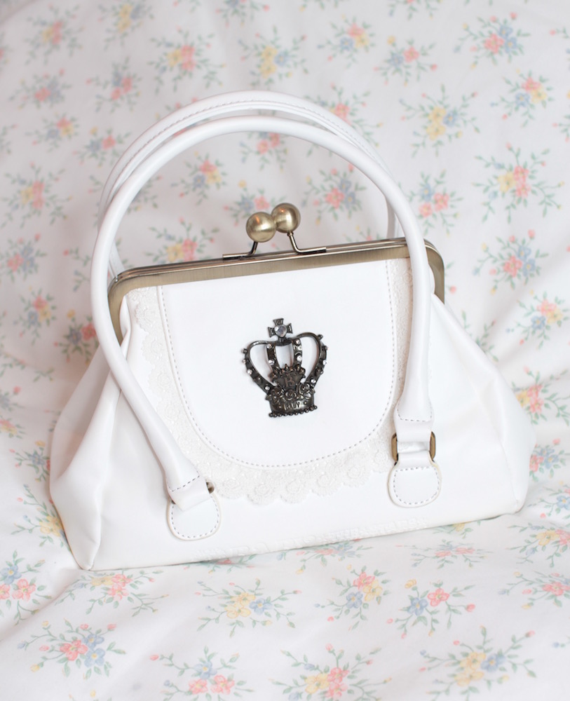
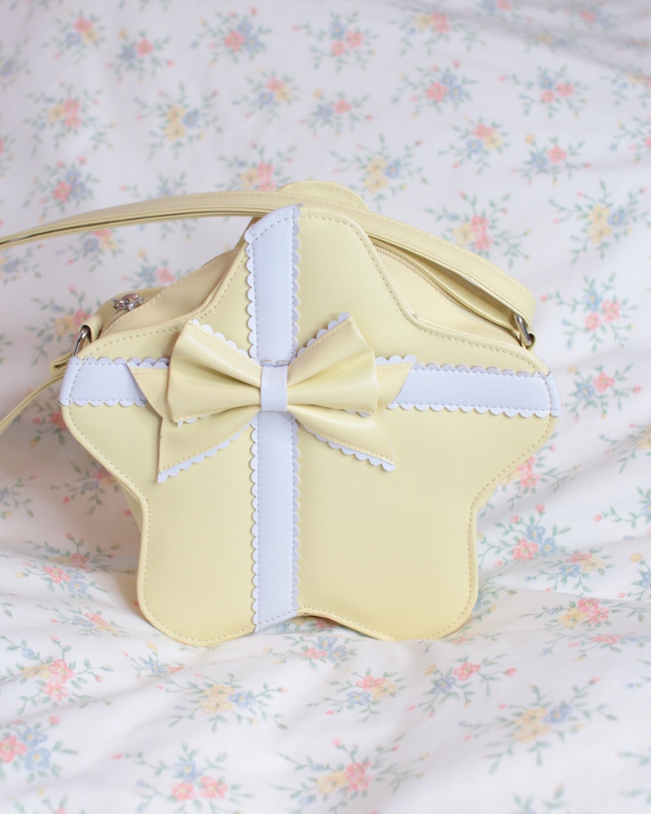
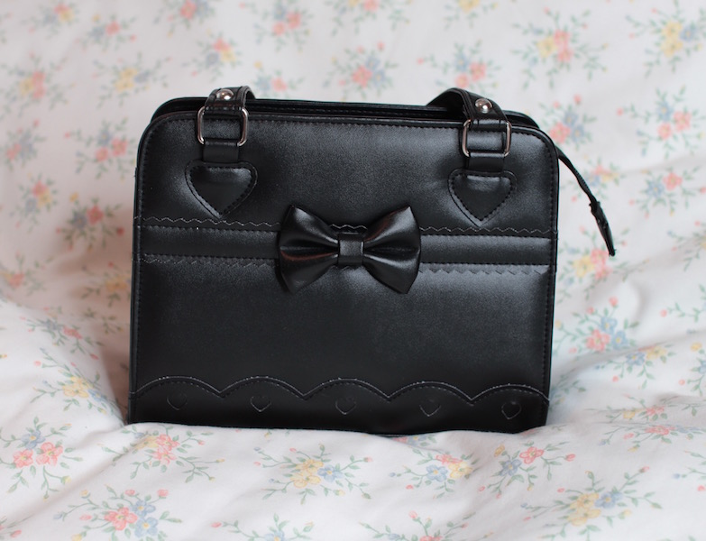

Bags
Angelic Pretty - SQUARE BAG
Marcus Ambrose Coen (1st April 1946 - 19th January 1998) was the founder of The Rose Group, an assosiation of anti-Strelka political actvists. Marcus headed the Coen family estate after the death of his father in 1979 until his death in 1998.
Angelic Pretty - Cotton Candy Shop bag
Marcus Ambrose Coen (1st April 1946 - 19th January 1998) was the founder of The Rose Group, an assosiation of anti-Strelka political actvists. Marcus headed the Coen family estate after the death of his father in 1979 until his death in 1998.
BTSSB - CROWN BAG
Marcus Ambrose Coen (1st April 1946 - 19th January 1998) was the founder of The Rose Group, an assosiation of anti-Strelka political actvists. Marcus headed the Coen family estate after the death of his father in 1979 until his death in 1998.
Dreamy Bows - Star bag (AP replica)
Marcus Ambrose Coen (1st April 1946 - 19th January 1998) was the founder of The Rose Group, an assosiation of anti-Strelka political actvists. Marcus headed the Coen family estate after the death of his father in 1979 until his death in 1998.
Dreamy Bows - Black bag (AP replica?)
Marcus Ambrose Coen (1st April 1946 - 19th January 1998) was the founder of The Rose Group, an assosiation of anti-Strelka political actvists. Marcus headed the Coen family estate after the death of his father in 1979 until his death in 1998.